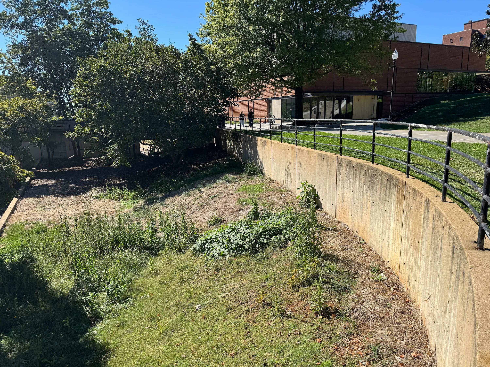

Processional Promenade
Fall 2025A structure for the community promoting connection
.webp)

The Site
The starting point for the project was the site, an unused courtyard area between UT's Art and Architecture building and the walkway around campus. The goal was to activate this space by bringing people to come together.
Concept
The projects before inspired the structure and form of the promenade. First, we used random objects to fill up the space of a cube. Then, we abstracted this form into the model seen here. The triangular base, sloped walls, and slits created intriguing spaces that I explored further by drawing them with respect to a human scale.


The Promenade
Using the idea of connection and the ideas from the spaces in the cube, the promenade emerged. The three main spaces are the small courtyard with long stairs for seating and a table/counter along the wall, a upper deck for sightseeing and conversation, and an inner promenade with a cut-out seating section and tables for events, social gatherings, etc. The ramps and staircases provide multiple points of access and connections between these major spaces. By guiding pedestrians, teachers, and students through the promenade, people will be encouraged to meet others and interact with the spaces.


.webp)